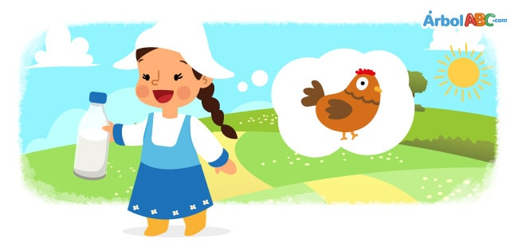

Había una vez una joven lechera que caminaba con un cántaro de leche
para vender en el mercado del pueblo. Mientras caminaba pensaba en
todas las cosas que haría con el dinero de la venta:
—Cuando me paguen —se dijo—, compraré de inmediato unas gallinas.
Estas gallinas pondrán muchísimos huevos y los venderé en el mercado.
Con el dinero de los huevos me compraré un vestido y zapatos muy
elegantes. Luego, iré a la feria y como luciré tan hermosa, todos los
chicos querrán acercarse a hablar conmigo.
Por andar distraída con sus pensamientos, la lechera tropezó con una
piedra y el cántaro se rompió, derramando toda la leche. Con el
cántaro destrozado se fueron las gallinas y los huevos; también el
vestido y los zapatos.